Small model implementation workflow
Martin Modrák
2023-01-05
Source:vignettes/small_model_workflow.Rmd
small_model_workflow.RmdHere we describe a complete process to iteratively build and validate the implementation of a non-trivial, but still relatively small model. This is not a full Bayesian Workflow, instead the process described here can be thought of as a subroutine in the full workflow: here we take a relatively precise description of a model as input and try to produce a Stan program that implements this model. Once we have a Stan program we trust, it is still necessary to validate its fit to actual data and other properties, which may trigger a need to change the model. At this point you may want to go back to simulations and make sure the modified model is implemented correctly.
The workflow described here focuses on small models. “Small” means that the model is relatively fast to fit and we don’t have to worry about computation too much. Once running ~100 fits of the model becomes too costly, there are additional tricks and considerations that we hope to delve into in a “Building a complex model” vignette (which currently doesn’t exist). Still many of the approaches here also apply to complex models (especially starting small and building smaller submodels separately), and with proper separation of the model into submodels, one can validate big chunks of Stan code while working with small models only.
We expect the reader to be familiar with basics of the package. If not, check out the “basic_usage” vignette.
Our goal
The example we’ll investigate is building a two-component Poisson mixture, where the mixing ratio is allowed to vary with some predictors while the means of the components are the same for all observations. A somewhat contrived real world situation where this could be a useful model: there are two sub-species of an animal that are hard to observe directly, but leave droppings (poop) behind, that we can find. Further, we know the subspecies differ in the average number of droppings they leave at one place. So we can take the number of droppings as a noisy information about which subspecie was present at given location. We observe the number of droppings at multiple locations and record some environmental covariates about the locations (e.g. temperature, altitude) and want to learn something about the association between those covariates and the prevalence of either subspecie.
Big picture
This model naturally decomposes into two submodels:
the mixture submodel where the mixing ratio is the same for all observations
a beta regression where we take covariates and make a prediction of a probability, assuming we (noisily) observe the probability.
It is good practice to start small and implement and validate each of those submodels separately and then put them together and validate the bigger model. This makes is substantially easier to locate bugs. You’ll notice that the process ends up involving a lot of steps, but the fact is that we still ignore all the completely invalid models I created while writing this vignette (typos, compile errors, dimension mismatches, …). Developing models you can trust is hard work. More experienced users can definitely make bigger steps at once, but we strongly discourage anyone from writing a big model in one go. My experience is that whenever I try to do this, the model breaks, is impossible to debug and then I end up breaking it down anyway.
Let’s setup and get our hands dirty:
library(SBC)
use_cmdstanr <- getOption("SBC.vignettes_cmdstanr", TRUE) # Set to false to use rstan instead
if(use_cmdstanr) {
library(cmdstanr)
} else {
library(rstan)
rstan_options(auto_write = TRUE)
}
library(bayesplot)
library(posterior)
library(future)
plan(multisession)
options(SBC.min_chunk_size = 5)
# Setup caching of results
if(use_cmdstanr) {
cache_dir <- "./_small_model_worklow_SBC_cache"
} else {
cache_dir <- "./_small_model_worklow_rstan_SBC_cache"
}
if(!dir.exists(cache_dir)) {
dir.create(cache_dir)
}Mixture submodel
There is a good guide to mixtures in the Stan user’s guide. Following the user’s guide would save us from a lot of mistakes, but for the sake of example, we will pretend we didn’t really read it - and we’ll see the problems can be discovered via simulations.
So this is our first try at implementing the mixture submodel:
data {
int<lower=0> N;
int y[N];
}
parameters {
real mu1;
real mu2;
real<lower=0, upper=1> theta;
}
model {
target += log_mix(theta, poisson_log_lpmf(y | mu1), poisson_log_lpmf(y | mu2));
target += normal_lpdf(mu1 | 3, 1);
target += normal_lpdf(mu2 | 3, 1);
}
if(use_cmdstanr) {
model_first <- cmdstan_model("small_model_workflow/mixture_first.stan")
backend_first <- SBC_backend_cmdstan_sample(model_first)
} else {
model_first <- stan_model("small_model_workflow/mixture_first.stan")
backend_first <- SBC_backend_rstan_sample(model_first)
}And this is our code to simulate data for this model:
generator_func_first <- function(N) {
mu1 <- rnorm(1, 3, 1)
mu2 <- rnorm(1, 3, 1)
theta <- runif(1)
y <- numeric(N)
for(n in 1:N) {
if(runif(1) < theta) {
y[n] <- rpois(1, exp(mu1))
} else {
y[n] <- rpois(1, exp(mu2))
}
}
list(
variables = list(
mu1 = mu1,
mu2 = mu2,
theta = theta
),
generated = list(
N = N,
y = y
)
)
}
generator_first <- SBC_generator_function(generator_func_first, N = 50)Let’s start with just a single simulation:
set.seed(68455554)
datasets_first <- generate_datasets(generator_first, 1)
results_first <- compute_SBC(datasets_first, backend_first,
cache_mode = "results",
cache_location = file.path(cache_dir, "mixture_first"))## Results loaded from cache file 'mixture_first'## - 1 (100%) fits had at least one Rhat > 1.01. Largest Rhat was 1.717.## - 1 (100%) fits had tail ESS undefined or less than half of the maximum rank, potentially skewing
## the rank statistics. The lowest tail ESS was 129.
## If the fits look good otherwise, increasing `thin_ranks` (via recompute_SBC_statistics)
## or number of posterior draws (by refitting) might help.## - 1 (100%) fits had divergent transitions. Maximum number of divergences was 5.## Not all diagnostics are OK.
## You can learn more by inspecting $default_diagnostics, $backend_diagnostics
## and/or investigating $outputs/$messages/$warnings for detailed output from the backend.Oh, we have convergence problems, let us examine the pairs plots
# Fixing the condition for above/over diagonal chains, in a minority
# of runs the plot shows the problem less clearly, as discussed at
# https://github.com/stan-dev/bayesplot/issues/132
p_cond <- pairs_condition(chains = list(c(1,3), c(2,4)))
if(use_cmdstanr) {
mcmc_pairs(results_first$fits[[1]]$draws(), condition = p_cond)
} else {
mcmc_pairs(results_first$fits[[1]], condition = p_cond)
}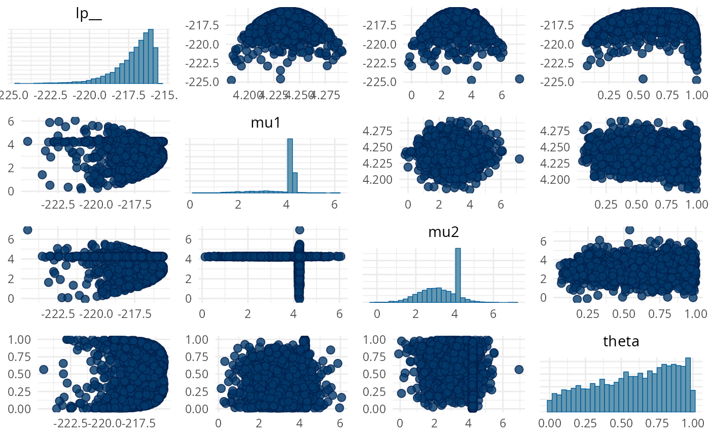
One thing that stands out is that either mu1 is tightly
determined and mu2 is allowed the full prior range or the
other way around. We also don’t learn anything about theta.
This might be puzzling but relates to bad usage of
log_mix. The thing is that
poisson_log_lpmf(y | mu1) returns a single number - the
total log likelihood of all elements of y given
mu1. And thus we are building a mixture where either all
observations are from the first component or all are from the second
component. To implement mixture where each observation is allowed to
come from a different component, we need to loop over observations and
do a separate log_mix call for each.
More details on the mathematical background are explained in the “Vectorizing mixtures” section of Stan User’s guide.
Fixing mixture
So we’ve fixed the log_mix problem and this is our new
model:
data {
int<lower=0> N;
int y[N];
}
parameters {
real mu1;
real mu2;
real<lower=0, upper=1> theta;
}
model {
for(n in 1:N) {
target += log_mix(theta,
poisson_log_lpmf(y[n] | mu1),
poisson_log_lpmf(y[n] | mu2));
}
target += normal_lpdf(mu1 | 3, 1);
target += normal_lpdf(mu2 | 3, 1);
}
if(use_cmdstanr) {
model_fixed_log_mix <- cmdstan_model("small_model_workflow/mixture_fixed_log_mix.stan")
backend_fixed_log_mix <- SBC_backend_cmdstan_sample(model_fixed_log_mix)
} else {
model_fixed_log_mix <- stan_model("small_model_workflow/mixture_fixed_log_mix.stan")
backend_fixed_log_mix <- SBC_backend_rstan_sample(model_fixed_log_mix)
}So let’s try once again with the same single simulation:
results_fixed_log_mix <- compute_SBC(datasets_first, backend_fixed_log_mix,
cache_mode = "results",
cache_location = file.path(cache_dir, "mixture_fixed_log_mix"))## Results loaded from cache file 'mixture_fixed_log_mix'## - 1 (100%) fits had at least one Rhat > 1.01. Largest Rhat was 1.53.## - 1 (100%) fits had tail ESS undefined or less than half of the maximum rank, potentially skewing
## the rank statistics. The lowest tail ESS was 28.
## If the fits look good otherwise, increasing `thin_ranks` (via recompute_SBC_statistics)
## or number of posterior draws (by refitting) might help.## Not all diagnostics are OK.
## You can learn more by inspecting $default_diagnostics, $backend_diagnostics
## and/or investigating $outputs/$messages/$warnings for detailed output from the backend.No warnings this time. We look at the stats:
results_fixed_log_mix$stats## # A tibble: 3 × 15
## sim_id variable simulated_value rank z_score mean median sd mad
## <int> <chr> <dbl> <dbl> <dbl> <dbl> <dbl> <dbl> <dbl>
## 1 1 mu1 3.13 293 0.186 2.98 2.68 0.769 0.398
## 2 1 mu2 4.27 344 0.587 3.83 4.25 0.743 0.0266
## 3 1 theta 0.0528 223 -0.542 0.270 0.0449 0.400 0.0408
## # … with 6 more variables: q5 <dbl>, q95 <dbl>, rhat <dbl>, ess_bulk <dbl>,
## # ess_tail <dbl>, max_rank <int>We see nothing obviously wrong, the posterior means are relatively close to simulated values (as summarised by the z-scores) - no variable is clearly ridiculously misfit. So let’s run a few more iterations.
set.seed(8314566)
datasets_first_10 <- generate_datasets(generator_first, 10)
results_fixed_log_mix_2 <- compute_SBC(datasets_first_10, backend_fixed_log_mix,
cache_mode = "results",
cache_location = file.path(cache_dir, "mixture_fixed_log_mix_2"))## Results loaded from cache file 'mixture_fixed_log_mix_2'## - 10 (100%) fits had at least one Rhat > 1.01. Largest Rhat was 1.735.## - 8 (80%) fits had tail ESS undefined or less than half of the maximum rank, potentially skewing
## the rank statistics. The lowest tail ESS was 28.
## If the fits look good otherwise, increasing `thin_ranks` (via recompute_SBC_statistics)
## or number of posterior draws (by refitting) might help.## Not all diagnostics are OK.
## You can learn more by inspecting $default_diagnostics, $backend_diagnostics
## and/or investigating $outputs/$messages/$warnings for detailed output from the backend.So there are some problems - we have quite a bunch of high R-hat and low ESS values. This is the distribution of all rhats:
hist(results_fixed_log_mix_2$stats$rhat)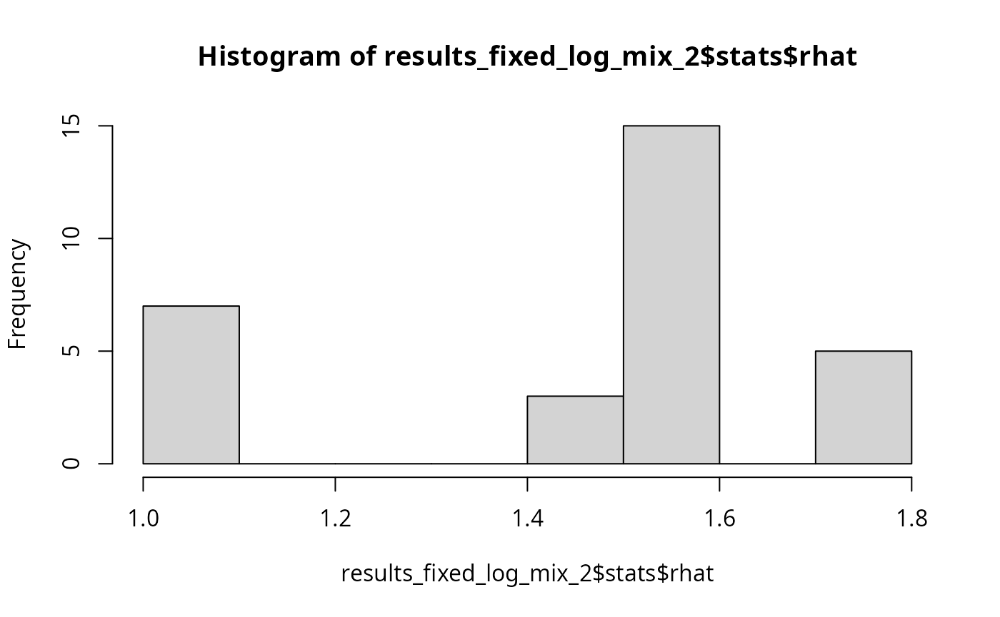
Let’s examine a single pairs plot:
if(use_cmdstanr) {
mcmc_pairs(results_fixed_log_mix_2$fits[[1]]$draws())
} else {
mcmc_pairs(results_fixed_log_mix_2$fits[[1]])
}
We clearly see two modes in the posterior. And upon reflection, we
can see why: swapping mu1 with mu2 while also
changing theta for 1 - theta gives
exactly the same likelihood - because the ordering does not
matter. A more detailed explanation of this type of problem is at https://betanalpha.github.io/assets/case_studies/identifying_mixture_models.html
Fixing ordering
We can easily fix the ordering of the mus by using the
ordered built-in type.
data {
int<lower=0> N;
int y[N];
}
parameters {
ordered[2] mu;
real<lower=0, upper=1> theta;
}
model {
for(n in 1:N) {
target += log_mix(theta,
poisson_log_lpmf(y[n] | mu[1]),
poisson_log_lpmf(y[n] | mu[2]));
}
target += normal_lpdf(mu | 3, 1);
}
if(use_cmdstanr) {
model_fixed_ordered <- cmdstan_model("small_model_workflow/mixture_fixed_ordered.stan")
backend_fixed_ordered <- SBC_backend_cmdstan_sample(model_fixed_ordered)
} else {
model_fixed_ordered <- stan_model("small_model_workflow/mixture_fixed_ordered.stan")
backend_fixed_ordered <- SBC_backend_rstan_sample(model_fixed_ordered)
}We also need to update the generator to match the new names and ordering constant:
generator_func_ordered <- function(N) {
# If the priors for all components of an ordered vector are the same
# then just sorting the result of a generator is enough to create
# a valid draw from the ordered vector prior
mu <- sort(rnorm(2, 3, 1))
theta <- runif(1)
y <- numeric(N)
for(n in 1:N) {
if(runif(1) < theta) {
y[n] <- rpois(1, exp(mu[1]))
} else {
y[n] <- rpois(1, exp(mu[2]))
}
}
list(
variables = list(
mu = mu,
theta = theta
),
generated = list(
N = N,
y = y
)
)
}
generator_ordered <- SBC_generator_function(generator_func_ordered, N = 50)We are kind of confident (and the model fits quickly), so we’ll already start with 10 simulations.
set.seed(3785432)
datasets_ordered_10 <- generate_datasets(generator_ordered, 10)
results_fixed_ordered <- compute_SBC(datasets_ordered_10, backend_fixed_ordered,
cache_mode = "results",
cache_location = file.path(cache_dir, "mixture_fixed_ordered"))## Results loaded from cache file 'mixture_fixed_ordered'## - 2 (20%) fits had at least one Rhat > 1.01. Largest Rhat was 1.207.## - 2 (20%) fits had tail ESS undefined or less than half of the maximum rank, potentially skewing
## the rank statistics. The lowest tail ESS was 30.
## If the fits look good otherwise, increasing `thin_ranks` (via recompute_SBC_statistics)
## or number of posterior draws (by refitting) might help.## - 2 (20%) fits had divergent transitions. Maximum number of divergences was 145.## Not all diagnostics are OK.
## You can learn more by inspecting $default_diagnostics, $backend_diagnostics
## and/or investigating $outputs/$messages/$warnings for detailed output from the backend.Now some fits still produce problematic Rhats or divergent
transitions, let’s browse the $backend_diagnostics (which
contain Stan-specific diagnostic values) to see which simulations are
causing problems:
results_fixed_ordered$backend_diagnostics## sim_id max_chain_time n_failed_chains n_divergent n_max_treedepth n_rejects
## 1 1 0.484 0 7 0 0
## 2 2 0.777 0 145 0 0
## 3 3 0.556 0 0 0 0
## 4 4 0.501 0 0 0 0
## 5 5 2.629 0 0 0 0
## 6 6 0.665 0 0 0 0
## 7 7 0.498 0 0 0 0
## 8 8 0.455 0 0 0 0
## 9 9 0.376 0 0 0 0
## 10 10 0.374 0 0 0 0One of the fits has quite a lot of divergent transitions. Let’s look at the pairs plot for the model:
problematic_fit_id <- 2
problematic_fit <- results_fixed_ordered$fits[[problematic_fit_id]]
if(use_cmdstanr) {
mcmc_pairs(problematic_fit$draws(), np = nuts_params(problematic_fit))
} else {
mcmc_pairs(problematic_fit, np = nuts_params(problematic_fit))
}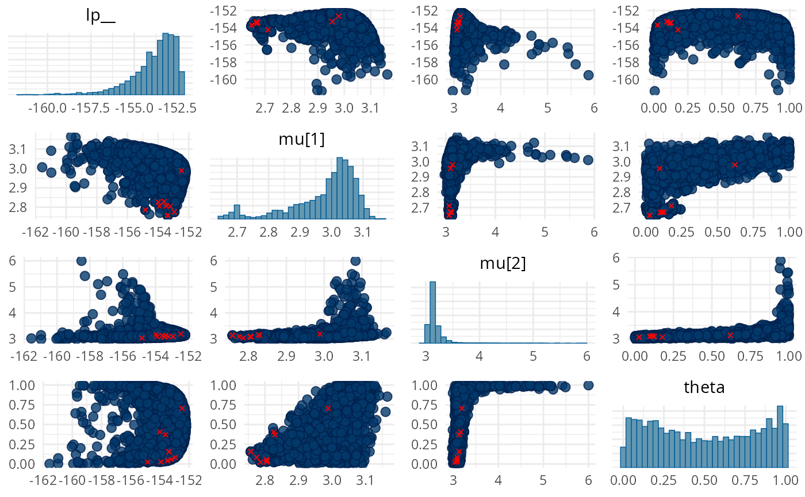
There is a lot of ugly stuff going on. Notably, one can notice that the posterior of theta is bimodal, preferring either almost 0 or almost 1 - and when that happens, the mean of one of the components is almost unconstrained. Why does that happen? The key to the answer is in the simulated values for the component means:
subset_draws(datasets_ordered_10$variables, draw = problematic_fit_id)## # A draws_matrix: 1 iterations, 1 chains, and 3 variables
## variable
## draw mu[1] mu[2] theta
## 2 3.1 3.1 0.65We were unlucky enough to simulate data where both components have almost the same mean and thus we are actually looking at data that is not really a mixture. Mixture models can misbehave badly in such cases (see once again the case study by Mike Betancourt for a bit more detailed dive into this particular problem).
Fixing degenerate components?
What to do about this? Fixing the model to handle such cases gracefully is hard. But the problem is basically our prior - we want to express that (since we are fitting a two component model), we don’t expect the means to be too similar. So if we can change our simulation to avoid this, we’ll be able to proceed with SBC. If such a pattern appeared in real data, we would still have a problem, but we would notice thanks to the diagnostics.
This can definitely be done. But another way is to just ignore the simulations that had divergences for SBC calculations. It turns out that if we remove simulations in a way that only depends on the observed data (and not on unobserved variables), the SBC identity is preserved and we can use SBC without modifications. The resulting check is however telling us something only for data that were not rejected. In this case this is not a big issue: if a fit had divergent transitions, we would not trust it anyway, so removing fits with divergent transitions is not such a big deal.
For more details see the rejection_sampling
vignette.
So let us subset the results to avoid divergences:
sim_ids_to_keep <-
results_fixed_ordered$backend_diagnostics$sim_id[
results_fixed_ordered$backend_diagnostics$n_divergent == 0]
# Equivalent tidy version if you prefer
# sim_ids_to_keep <- results_fixed_ordered$backend_diagnostics %>%
# dplyr::filter(n_divergent == 0) %>%
# dplyr::pull(sim_id)
results_fixed_ordered_subset <- results_fixed_ordered[sim_ids_to_keep]
summary(results_fixed_ordered_subset)## SBC_results with 8 total fits.
## - No fits had errors.
## - No fits gave warnings.
## - No fits had Rhat > 1.01.
## - All fits had tail ESS > half of the maximum rank.
## - The lowest bulk ESS was 1141
## - No fits had failed chains.
## - No fits had divergent transitions.
## - No fits had iterations that saturated max treedepth.
## - No fits had steps rejected.
## - Maximum time per chain was 2.629 sec.This gives us no obvious problems.
plot_rank_hist(results_fixed_ordered_subset)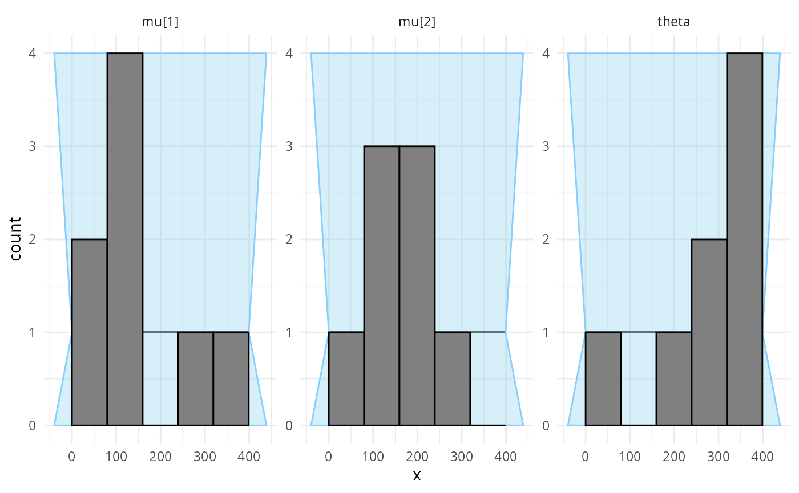
plot_ecdf_diff(results_fixed_ordered_subset)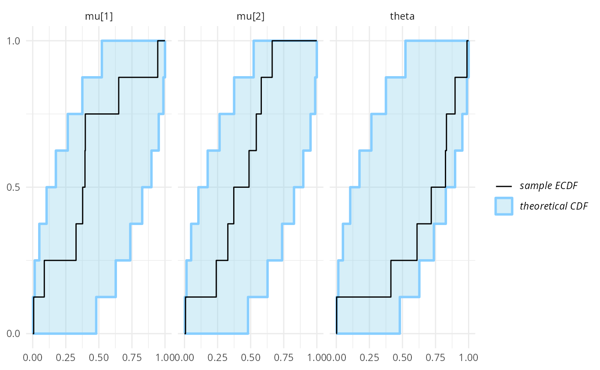
Since we now have only 8 simulations, it is not surprising that we are still left with a huge uncertainty about the actual coverage of our posterior intervals - we can see that in a plot:
plot_coverage(results_fixed_ordered_subset)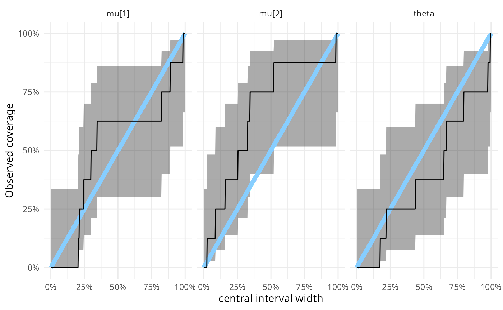
The coverage plot shows the observed coverage of central posterior intervals of varying width and the associated uncertainty (black + grey), the blue line represents perfect calibration.
Or investigate numerically.
coverage <- empirical_coverage(results_fixed_ordered_subset$stats, width = c(0.5,0.9,0.95))
coverage## # A tibble: 9 × 6
## variable width width_represented ci_low estimate ci_high
## <chr> <dbl> <dbl> <dbl> <dbl> <dbl>
## 1 mu[1] 0.5 0.5 0.299 0.625 0.863
## 2 mu[1] 0.9 0.9 0.518 0.875 0.972
## 3 mu[1] 0.95 0.95 0.518 0.875 0.972
## 4 mu[2] 0.5 0.5 0.400 0.75 0.925
## 5 mu[2] 0.9 0.9 0.518 0.875 0.972
## 6 mu[2] 0.95 0.95 0.518 0.875 0.972
## 7 theta 0.5 0.5 0.137 0.375 0.701
## 8 theta 0.9 0.9 0.400 0.75 0.925
## 9 theta 0.95 0.95 0.400 0.75 0.925We can clearly see that while there are no terrible errors, a quite
big miscalibration is still consistent with the SBC results so far, for
example the 90% posterior interval for theta could (as far
as we know) contain 40% - 93% of the true values. That’s not very
reassuring.
So we can run for more iterations - to reduce memory consumption, we
set keep_fits = FALSE. You generally don’t want to do this
unless you are really short on memory, as it makes you unable to inspect
any problems in your fits:
set.seed(54987622)
datasets_ordered_100 <- generate_datasets(generator_ordered, 100)
results_fixed_ordered_100 <- compute_SBC(datasets_ordered_100, backend_fixed_ordered,
keep_fits = FALSE, cache_mode = "results",
cache_location = file.path(cache_dir, "mixture_fixed_ordered_100"))## Results loaded from cache file 'mixture_fixed_ordered_100'## - 19 (19%) fits had at least one Rhat > 1.01. Largest Rhat was 1.354.## - 21 (21%) fits had tail ESS undefined or less than half of the maximum rank, potentially skewing
## the rank statistics. The lowest tail ESS was 11.
## If the fits look good otherwise, increasing `thin_ranks` (via recompute_SBC_statistics)
## or number of posterior draws (by refitting) might help.## - 28 (28%) fits had divergent transitions. Maximum number of divergences was 182.## Not all diagnostics are OK.
## You can learn more by inspecting $default_diagnostics, $backend_diagnostics
## and/or investigating $outputs/$messages/$warnings for detailed output from the backend.Once again we subset to keep only non-divergent fits - this also removes all the problematic Rhats and ESS.
sim_ids_to_keep <-
results_fixed_ordered_100$backend_diagnostics$sim_id[
results_fixed_ordered_100$backend_diagnostics$n_divergent == 0]
# Equivalent tidy version
# sim_ids_to_keep <- results_fixed_ordered_100$backend_diagnostics %>%
# dplyr::filter(n_divergent == 0) %>%
# dplyr::pull(sim_id)
results_fixed_ordered_100_subset <- results_fixed_ordered_100[sim_ids_to_keep]
summary(results_fixed_ordered_100_subset)## SBC_results with 72 total fits.
## - No fits had errors.
## - No fits gave warnings.
## - No fits had Rhat > 1.01.
## - All fits had tail ESS > half of the maximum rank.
## - The lowest bulk ESS was 507
## - No fits had failed chains.
## - No fits had divergent transitions.
## - No fits had iterations that saturated max treedepth.
## - No fits had steps rejected.
## - Maximum time per chain was 4.316 sec.And we can use bind_results to combine the new results
with the previous fits to not waste our computational effort.
results_fixed_ordered_combined <- bind_results(
results_fixed_ordered_subset, results_fixed_ordered_100_subset)
plot_rank_hist(results_fixed_ordered_combined)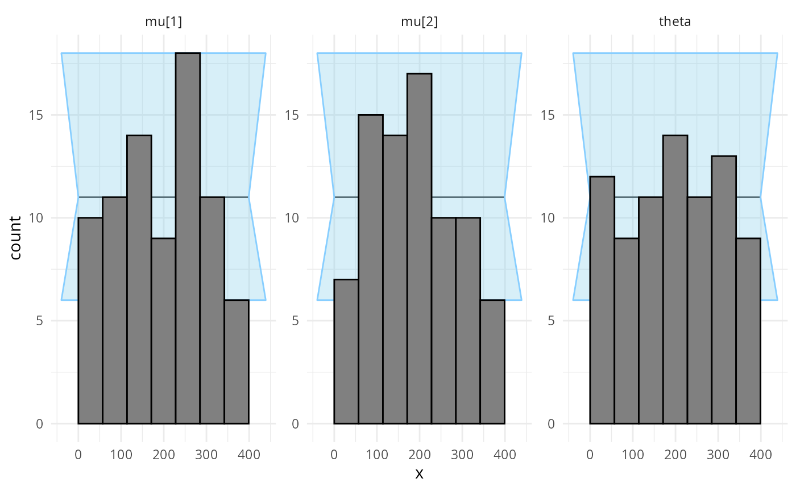
plot_ecdf_diff(results_fixed_ordered_combined)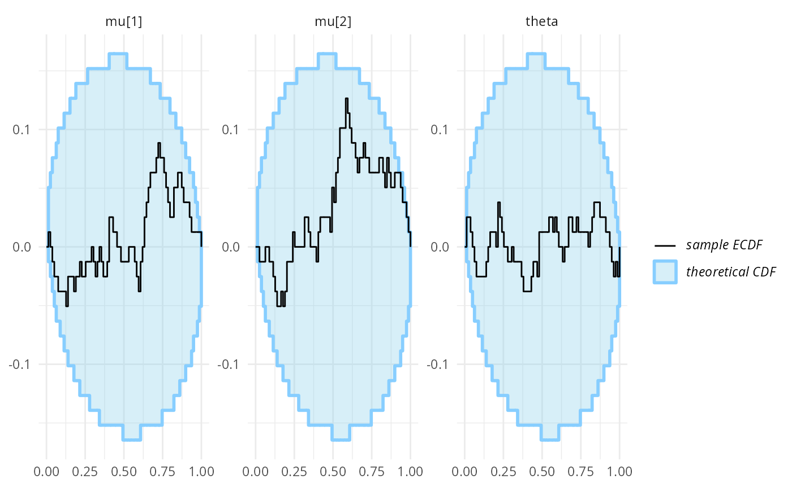
Seems fairly well within the expected bounds. We could definitely run
more iterations if we wanted to have a more strict check, but for now,
we are happy and the remaining uncertainty about the coverage of our
posterior intervals is no longer huge, so it is highly unlikely there is
some big bug lurking down there. While we see a potential problem where
the coverage for mu[1] and mu[2] is no longer
consistent with perfect calibration, the ecdf_diff plot
takes precedence as the uncertainty in the coverage plot is only
approximate and we thus cannot take it too seriously (see
help("empirical_coverage") for some more details).
plot_coverage(results_fixed_ordered_combined)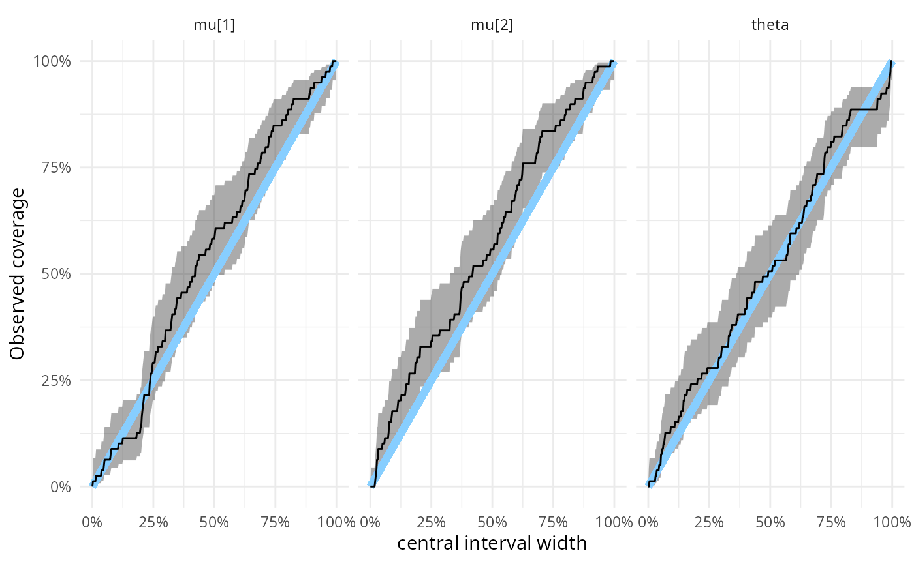
Note: it turns out that extending the model to more components becomes somewhat tricky as the model can become sensitive to initialization. Also the problems with data that can be explained by fewer components than the model assumes become more prevalent.
Beta regression submodel
Let’s move to the beta regression submodel of our model. After spending a bunch of time implementing this, I realized, that maybe treating this as a logistic regression submodel would have been wiser (and sufficient). But I am gonna keep it in - it just demonstrates that a real workflow can be messy and let’s us show some additional classes of problems and how they manifest in SBC.
Checking the wiki page for Beta distribution, we notice that it has two parameters, both bounded to be positive. So our first attempt at beta regression just creates two linear predictors - one for each parameter of the distribution. We then exponentiate the predictors to make them positive and we have a model:
data {
int<lower=0> N_obs;
vector<lower=0, upper=1>[N_obs] y;
int<lower=1> N_predictors;
matrix[N_predictors, N_obs] x;
}
parameters {
matrix[2, N_predictors] beta;
}
model {
matrix[2, N_obs] linpred = beta * x;
target += beta_lpdf(y | exp(linpred[1,]), exp(linpred[2,]));
target += normal_lpdf(to_vector(beta) | 0, 1);
}
if(use_cmdstanr) {
model_beta_first <- cmdstan_model("small_model_workflow/beta_first.stan")
backend_beta_first <- SBC_backend_cmdstan_sample(model_beta_first)
} else {
model_beta_first <- stan_model("small_model_workflow/beta_first.stan")
backend_beta_first <- SBC_backend_rstan_sample(model_beta_first)
}We also write a matching generator (microoptimization tip: I usually write Stan models first so that I can work on the generator code while the Stan model compiles):
generator_func_beta_first <- function(N_obs, N_predictors) {
repeat {
beta <- matrix(rnorm(N_predictors * 2, 0, 1), nrow = 2, ncol = N_predictors)
x <- matrix(rnorm(N_predictors * N_obs, 0, 1), nrow = N_predictors, ncol = N_obs)
x[1, ] <- 1 # Intercept
y <- array(NA_real_, N_obs)
for(n in 1:N_obs) {
linpred <- rep(0, 2)
for(c in 1:2) {
for(p in 1:N_predictors) {
linpred[c] <- linpred[c] + x[p, n] * beta[c, p]
}
}
y[n] <- rbeta(1, exp(linpred[1]), exp(linpred[2]))
}
if(all(y < 1 - 1e-12)) {
break;
}
}
list(
variables = list(
beta = beta
),
generated = list(
N_obs = N_obs,
N_predictors = N_predictors,
y = y,
x = x
)
)
}
generator_beta_first <- SBC_generator_function(generator_func_beta_first, N_obs = 50, N_predictors = 3)One thing to note is that we add a rejection sampling step - we
repeatedly generate simulations, until we find one without
y values very close to 1. Those can be problematic as they
can be rounded to 1 when the data for Stan is written to disk. And exact
1 is impossible with the Beta likelihood and the model will fail.
Rejecting the simulation due to this criterion is quite rare and in
fact, it does not threaten the validity of the SBC procedure (at least
to the extent our real data also don’t contain such extreme values) -
for more details see the rejection_sampling
vignette.
We’ll start with 10 simulations once again.
set.seed(3325488)
datasets_beta_first <- generate_datasets(generator_beta_first, 10)
results_beta_first_10 <- compute_SBC(datasets_beta_first, backend_beta_first,
cache_mode = "results",
cache_location = file.path(cache_dir, "beta_first_10"))## Results loaded from cache file 'beta_first_10'## - 1 (10%) fits had divergent transitions. Maximum number of divergences was 7.## - 10 (100%) fits had some steps rejected. Maximum number of rejections was 26.## Not all diagnostics are OK.
## You can learn more by inspecting $default_diagnostics, $backend_diagnostics
## and/or investigating $outputs/$messages/$warnings for detailed output from the backend.We get a single fit with divergent transitions and the ranks look mostly OK:
plot_rank_hist(results_beta_first_10)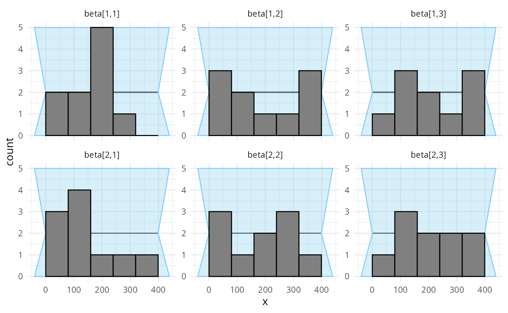
plot_ecdf_diff(results_beta_first_10)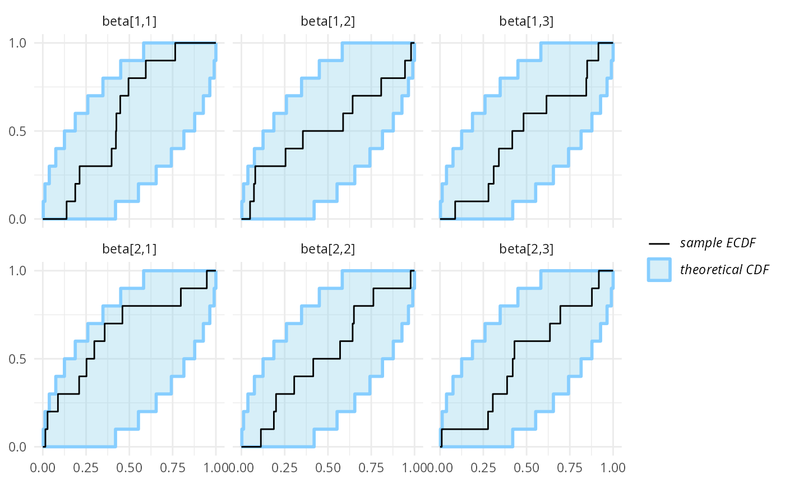
Let’s inspect the pairs plot for the offending fit:
if(use_cmdstanr) {
mcmc_pairs(results_beta_first_10$fits[[3]]$draws())
} else {
mcmc_pairs(results_beta_first_10$fits[[3]])
}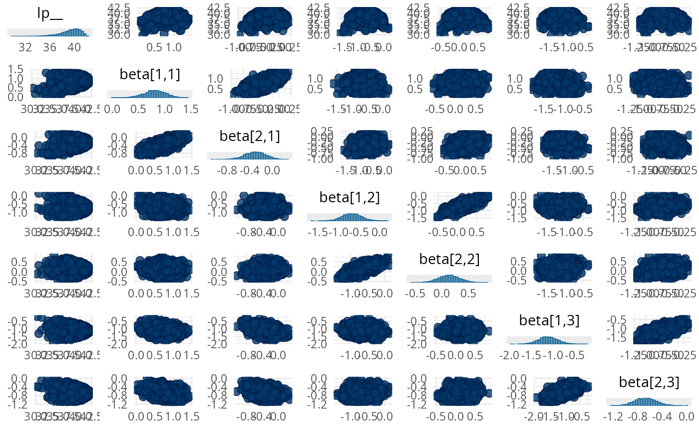
This is a very crowded plot and it is hard to resolve details, but we
see some correlations between the corresponding beta elements
(e.g. beta[1,1] and beta[2,1]), let’s have a
closer look and show the same pairs plot for five of our fits:
for(i in 1:5) {
fit <- results_beta_first_10$fits[[i]]
if(use_cmdstanr) {
pairs_input <- fit$draws()
} else {
pairs_input <- fit
}
print(mcmc_pairs(pairs_input, pars = c("beta[1,1]", "beta[2,1]","beta[1,2]", "beta[2,2]")))
}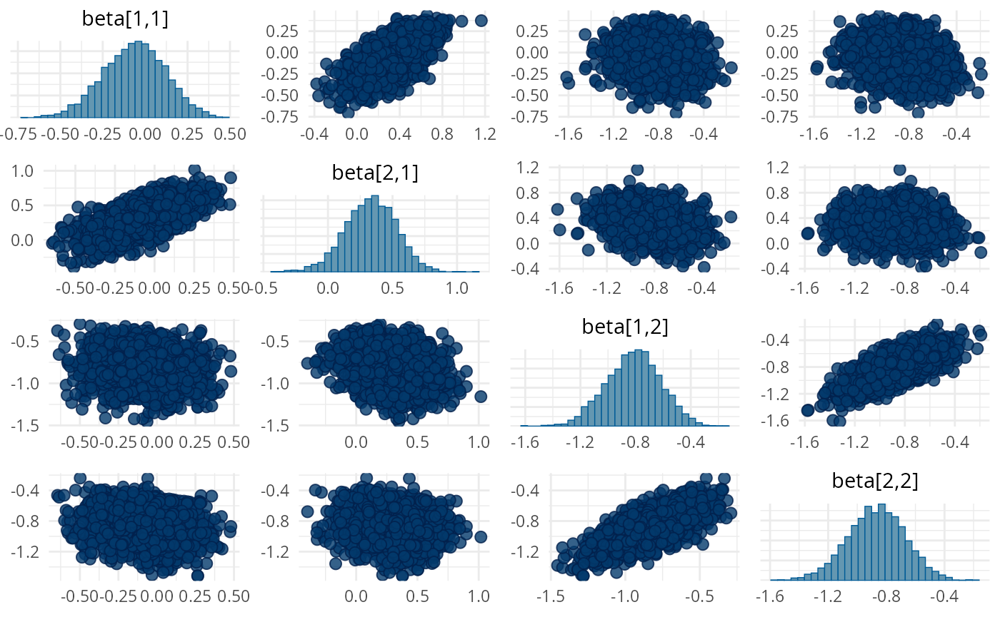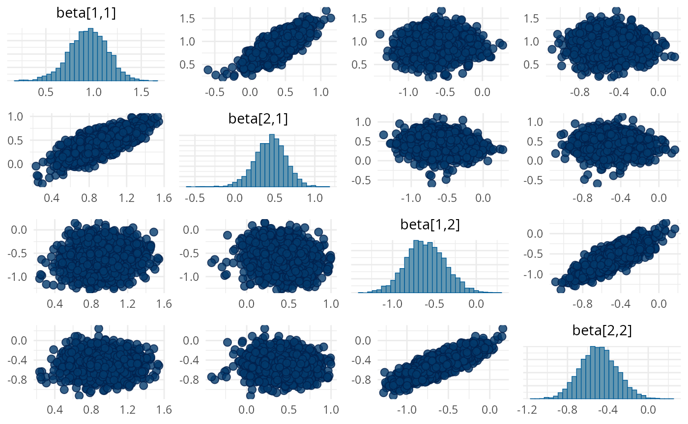 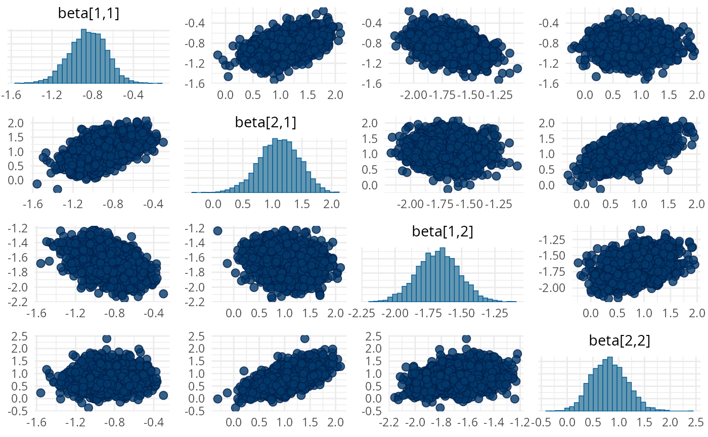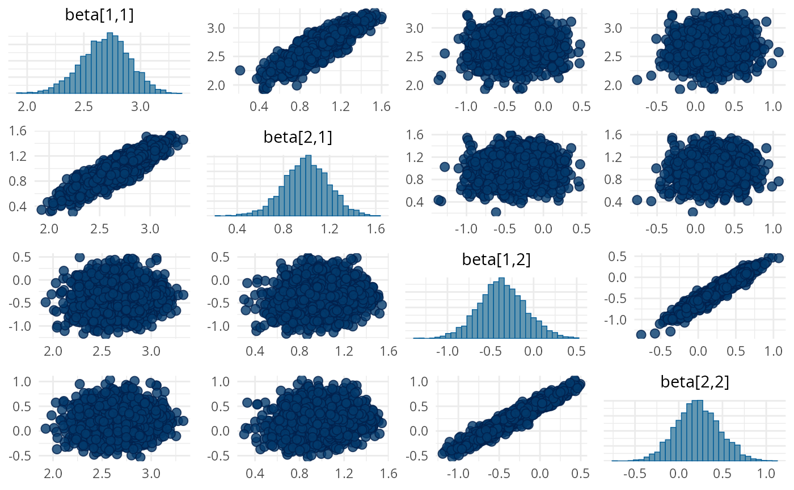
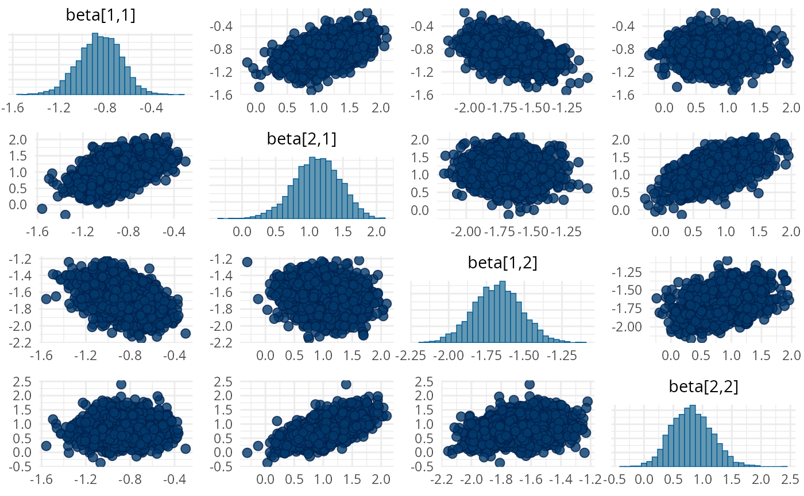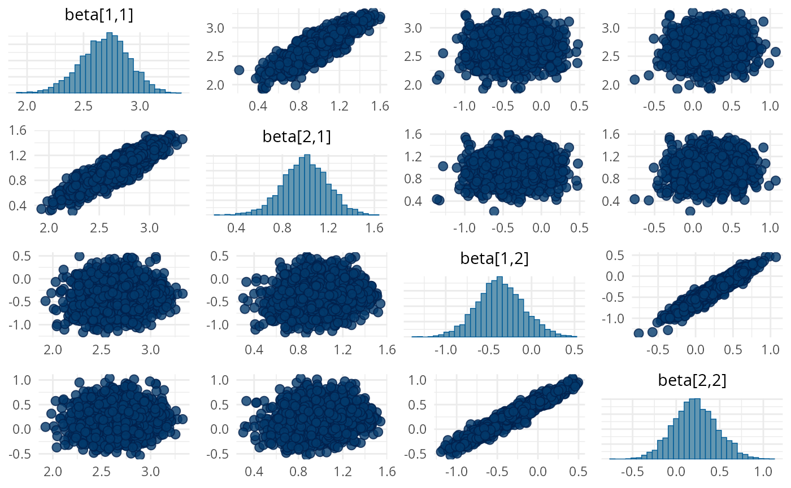
Turns out the correlations are in all fits, although sometimes they are relatively weak and the sampler is able to handle the posterior, it is potentially troubling. The main issue is that we plan to integrate this model with other submodels and problems that can be tolerated in a single submodel might interact with other submodels and make the model intractable.
We can even understand the reason for the positive correlation - it
is because predicted means of our response beta distribution is the
exp(linpred[1,]) / ( exp(linpred[1,]) + exp(linpred[2,]))
vector. Increasing both linear predictors by the same amount results in
the same predicted means for all elemntes of x (but
different predicted variances). And changing the two corresponding
beta elements has exactly this effect - the two linear
predictor for any x increase by the same amount. In this
case, the mean is more constrained than variance of the response, so the
individual predictor values for the first shape parameter are allowed to
vary quite a bit as long as their counterpart for the second shape
parameter increases as well, keeping the predicted mean the same and
showing our uncertainty about the variance. And this is how we get this
ridge.
Parametrizing the beta distribution via mean
The simplest way to resolve the issue with the correlations is to explicitly parametrize the beta distribution by its mean (\(0 < \mu < 1\)). The more common parametrization then adds a precision parameter (\(\phi > 0\)), so we then have \(y \sim \mathrm{Beta}(\mu \phi, (1 - \mu) \phi)\)
This also makes much more sense for the bigger task - combining with the mixture submodel, as we really want to predict just a single probability. So we’ll rewrite our predictors to predict only the logit of the mean (as in logistic regression) and keep the precision as a constant between observations. We could definitely also decide whether to keep the full flexibility and allow predictors for precision, we just don’t do it here.
This is then our updated model:
data {
int<lower=0> N_obs;
vector<lower=0, upper=1>[N_obs] y;
int<lower=1> N_predictors;
matrix[N_predictors, N_obs] x;
}
parameters {
vector[N_predictors] beta;
real<lower=0> phi;
}
model {
vector[N_obs] mu = inv_logit(transpose(x) * beta);
target += beta_lpdf(y | mu * phi, (1 - mu) * phi);
target += normal_lpdf(beta | 0, 1);
}
if(use_cmdstanr) {
model_beta_precision <- cmdstan_model("small_model_workflow/beta_precision.stan")
backend_beta_precision <- SBC_backend_cmdstan_sample(model_beta_precision)
} else {
model_beta_precision <- stan_model("small_model_workflow/beta_precision.stan")
backend_beta_precision <- SBC_backend_rstan_sample(model_beta_precision)
}And we need to update the generator to match:
generator_func_beta_precision <- function(N_obs, N_predictors) {
repeat {
beta <- rnorm(N_predictors, 0, 1)
phi <- rlnorm(1, 3, 1)
x <- matrix(rnorm(N_predictors * N_obs, 0, 1), nrow = N_predictors, ncol = N_obs)
x[1, ] <- 1 # Intercept
y <- array(NA_real_, N_obs)
for(n in 1:N_obs) {
linpred <- 0
for(p in 1:N_predictors) {
linpred <- linpred + x[p, n] * beta[p]
}
mu <- plogis(linpred)
y[n] <- rbeta(1, mu * phi, (1 - mu) * phi)
}
if(all(y < 1 - 1e-12)) {
break;
}
}
list(
variables = list(
beta = beta,
phi = phi
),
generated = list(
N_obs = N_obs,
N_predictors = N_predictors,
y = y,
x = x
)
)
}
generator_beta_precision <-
SBC_generator_function(generator_func_beta_precision, N_obs = 50, N_predictors = 3)Starting with 10 simulations:
set.seed(46988234)
datasets_beta_precision_10 <- generate_datasets(generator_beta_precision, 10)
results_beta_precision_10 <- compute_SBC(datasets_beta_precision_10, backend_beta_precision,
cache_mode = "results",
cache_location = file.path(cache_dir, "beta_precision_10"))## Results loaded from cache file 'beta_precision_10'## - 10 (100%) fits had some steps rejected. Maximum number of rejections was 13.## Not all diagnostics are OK.
## You can learn more by inspecting $default_diagnostics, $backend_diagnostics
## and/or investigating $outputs/$messages/$warnings for detailed output from the backend.No big problems from the fit and the plots:
plot_rank_hist(results_beta_precision_10)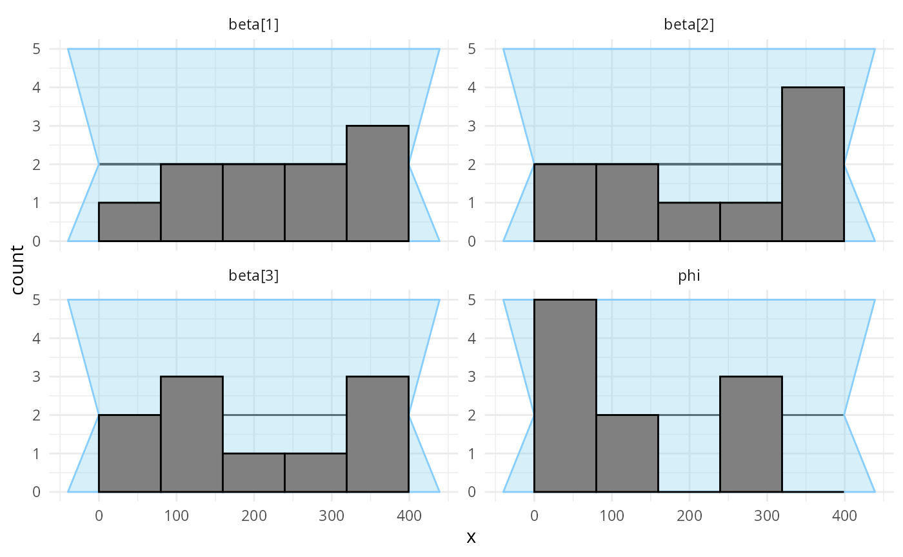
plot_ecdf_diff(results_beta_precision_10)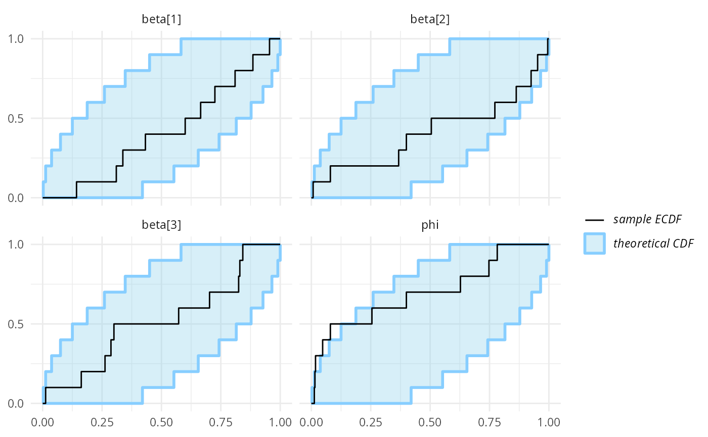
So we’ll run 90 more iterations and combine them with the previous results:
set.seed(2136468)
datasets_beta_precision_90 <- generate_datasets(generator_beta_precision, 90)
results_beta_precision_90 <- compute_SBC(
datasets_beta_precision_90, backend_beta_precision,
keep_fits = FALSE, cache_mode = "results",
cache_location = file.path(cache_dir, "beta_precision_90"))## Results loaded from cache file 'beta_precision_90'## - 90 (100%) fits had some steps rejected. Maximum number of rejections was 22.## Not all diagnostics are OK.
## You can learn more by inspecting $default_diagnostics, $backend_diagnostics
## and/or investigating $outputs/$messages/$warnings for detailed output from the backend.
results_beta_precision_100 <-
bind_results(
results_beta_precision_10,
results_beta_precision_90
)
datasets_beta_precision_100 <- bind_datasets(datasets_beta_precision_10, datasets_beta_precision_90)
plot_rank_hist(results_beta_precision_100)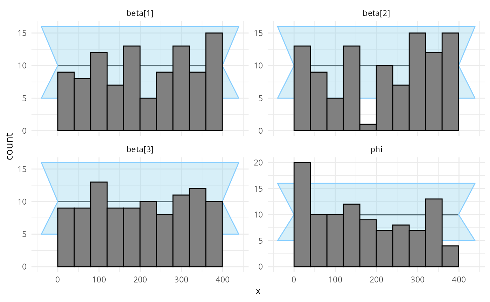
plot_ecdf_diff(results_beta_precision_100)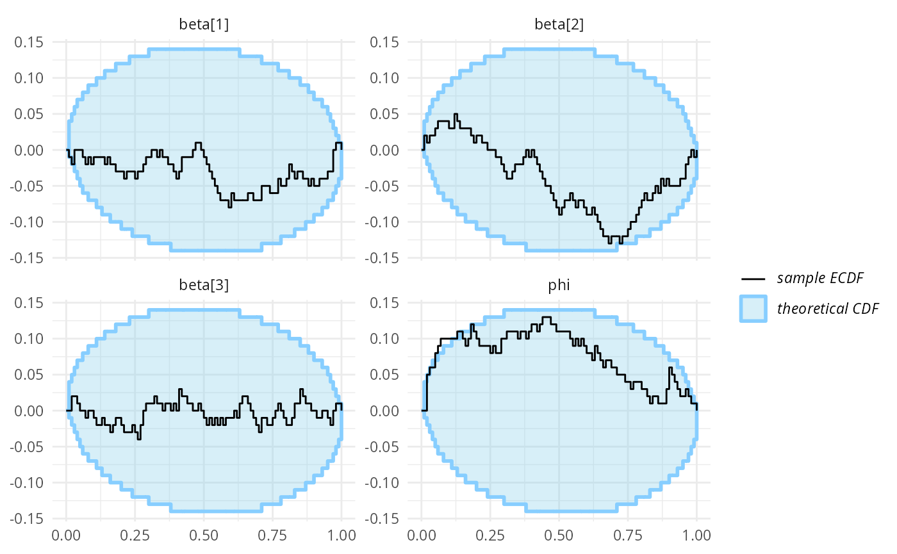
The plots don’t look terrible, but the beta[2] and
especially the phi variable show slight problems.
So we look back at our model code and note that we forgot to put any
prior on phi! Mismatches in priors between the model and
the simulator are unfortunately often not very well visible for SBC and
can require a lot of simulations to discover (see the limits_of_SBC
vignette for more detailed discussion)
Adding missing prior
So we add the missing prior to the model:
data {
int<lower=0> N_obs;
vector<lower=0, upper=1>[N_obs] y;
int<lower=1> N_predictors;
matrix[N_predictors, N_obs] x;
}
parameters {
vector[N_predictors] beta;
real<lower=0> phi;
}
model {
vector[N_obs] mu = inv_logit(transpose(x) * beta);
target += beta_lpdf(y | mu * phi, (1 - mu) * phi);
target += normal_lpdf(beta | 0, 1);
target += lognormal_lpdf(phi | 3, 1);
}
if(use_cmdstanr) {
model_beta_precision_fixed_prior <-
cmdstan_model("small_model_workflow/beta_precision_fixed_prior.stan")
backend_beta_precision_fixed_prior <- SBC_backend_cmdstan_sample(model_beta_precision_fixed_prior)
} else {
model_beta_precision_fixed_prior <-
stan_model("small_model_workflow/beta_precision_fixed_prior.stan")
backend_beta_precision_fixed_prior <- SBC_backend_rstan_sample(model_beta_precision_fixed_prior)
}And recompute for all 100 simulations at once (as we don’t expect adding prior to introduce huge problems).
results_beta_precision_fixed_prior <-
compute_SBC(datasets_beta_precision_100, backend_beta_precision_fixed_prior,
keep_fits = FALSE, cache_mode = "results",
cache_location = file.path(cache_dir, "beta_precision_fixed_prior"))## Results loaded from cache file 'beta_precision_fixed_prior'## - 100 (100%) fits had some steps rejected. Maximum number of rejections was 18.## Not all diagnostics are OK.
## You can learn more by inspecting $default_diagnostics, $backend_diagnostics
## and/or investigating $outputs/$messages/$warnings for detailed output from the backend.
plot_rank_hist(results_beta_precision_fixed_prior)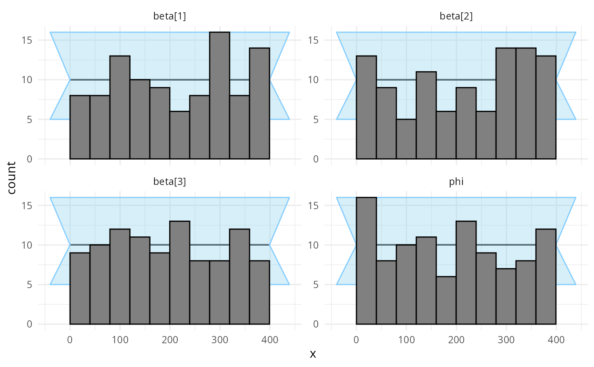
plot_ecdf_diff(results_beta_precision_fixed_prior)
Diagnostic plots are looking good! So we add 100 more simulations:
set.seed(1233845)
datasets_beta_precision_100b <- generate_datasets(generator_beta_precision, 100)
results_beta_precision_fixed_prior_200 <-
bind_results(
results_beta_precision_fixed_prior,
compute_SBC(datasets_beta_precision_100b, backend_beta_precision_fixed_prior,
keep_fits = FALSE, cache_mode = "results",
cache_location = file.path(cache_dir, "beta_precision_fixed_prior_2")))## Results loaded from cache file 'beta_precision_fixed_prior_2'## - 100 (100%) fits had some steps rejected. Maximum number of rejections was 17.## Not all diagnostics are OK.
## You can learn more by inspecting $default_diagnostics, $backend_diagnostics
## and/or investigating $outputs/$messages/$warnings for detailed output from the backend.
plot_rank_hist(results_beta_precision_fixed_prior_200)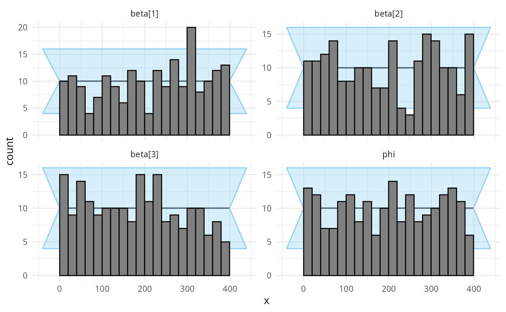
plot_ecdf_diff(results_beta_precision_fixed_prior_200)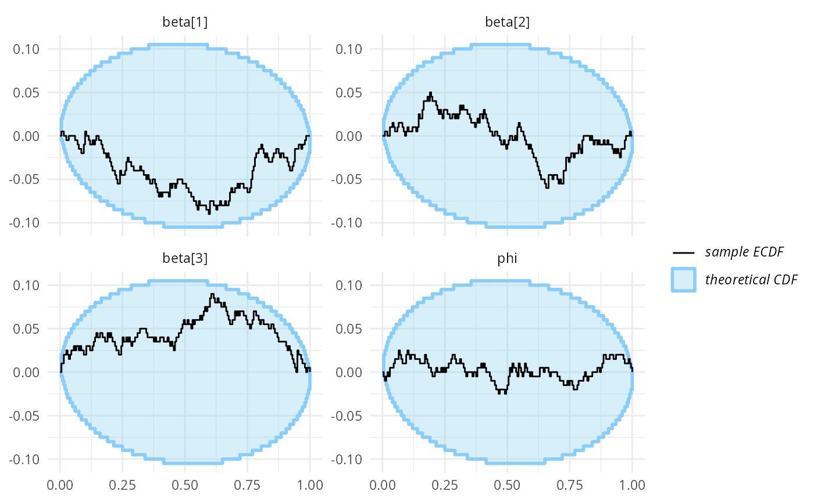
Yeah, still looking good. And we can see that the empirical coverage of our central intervals is in quite tight agreement with theory:
plot_coverage(results_beta_precision_fixed_prior_200)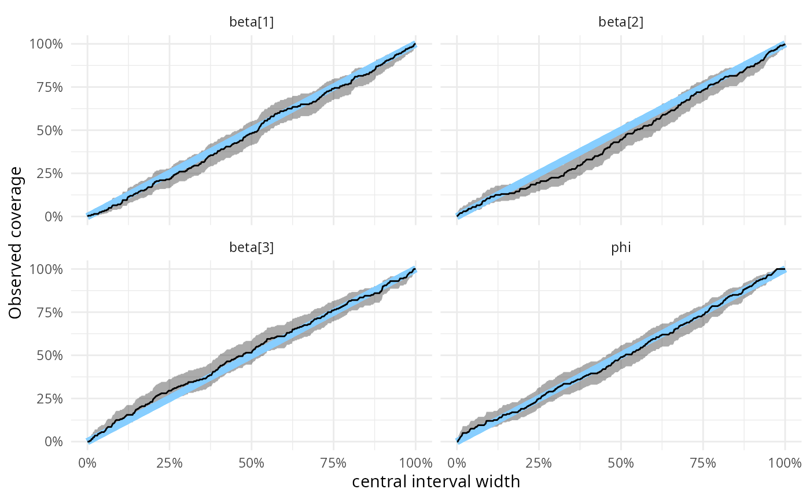
So for now we are also happy about the beta regression submodel.
Putting it together
We are finally ready to make a first attempt at the full model:
data {
int<lower=0> N_obs;
int y[N_obs];
int<lower=1> N_predictors;
matrix[N_predictors, N_obs] x;
}
parameters {
ordered[2] mu;
vector[N_predictors] beta;
}
model {
vector[N_obs] theta = inv_logit(transpose(x) * beta);
for(n in 1:N_obs) {
target += log_mix(theta[n],
poisson_log_lpmf(y[n] | mu[1]),
poisson_log_lpmf(y[n] | mu[2]));
}
target += normal_lpdf(mu | 3, 1);
target += normal_lpdf(beta | 0, 1);
}
if(use_cmdstanr) {
model_combined <- cmdstan_model("small_model_workflow/combined_first.stan")
backend_combined <- SBC_backend_cmdstan_sample(model_combined)
} else {
model_combined <- stan_model("small_model_workflow/combined_first.stan")
backend_combined <- SBC_backend_rstan_sample(model_combined)
}And this is our generator for the full model:
generator_func_combined <- function(N_obs, N_predictors) {
# If the priors for all components of an ordered vector are the same
# then just sorting the result of a generator is enough to create
# a valid draw from the ordered vector prior
mu <- sort(rnorm(2, 3, 1))
beta <- rnorm(N_predictors, 0, 1)
x <- matrix(rnorm(N_predictors * N_obs, 0, 1), nrow = N_predictors, ncol = N_obs)
x[1, ] <- 1 # Intercept
y <- array(NA_real_, N_obs)
for(n in 1:N_obs) {
linpred <- 0
for(p in 1:N_predictors) {
linpred <- linpred + x[p, n] * beta[p]
}
theta <- plogis(linpred)
if(runif(1) < theta) {
y[n] <- rpois(1, exp(mu[1]))
} else {
y[n] <- rpois(1, exp(mu[2]))
}
}
list(
variables = list(
beta = beta,
mu = mu
),
generated = list(
N_obs = N_obs,
N_predictors = N_predictors,
y = y,
x = x
)
)
}
generator_combined <- SBC_generator_function(generator_func_combined, N_obs = 50, N_predictors = 3)We are confident (and the fits are fast anyway), so we start with 200 simulations:
set.seed(5749955)
dataset_combined <- generate_datasets(generator_combined, 200)
results_combined <- compute_SBC(dataset_combined, backend_combined,
keep_fits = FALSE, cache_mode = "results",
cache_location = file.path(cache_dir, "combined"))## Results loaded from cache file 'combined'## - 10 (5%) fits had at least one Rhat > 1.01. Largest Rhat was 1.417.## - 12 (6%) fits had tail ESS undefined or less than half of the maximum rank, potentially skewing
## the rank statistics. The lowest tail ESS was 10.
## If the fits look good otherwise, increasing `thin_ranks` (via recompute_SBC_statistics)
## or number of posterior draws (by refitting) might help.## - 19 (10%) fits had divergent transitions. Maximum number of divergences was 213.## - 3 (2%) fits had some steps rejected. Maximum number of rejections was 2.## Not all diagnostics are OK.
## You can learn more by inspecting $default_diagnostics, $backend_diagnostics
## and/or investigating $outputs/$messages/$warnings for detailed output from the backend.We get some amount of divergent transitions, but the ranks look pretty good:
plot_rank_hist(results_combined)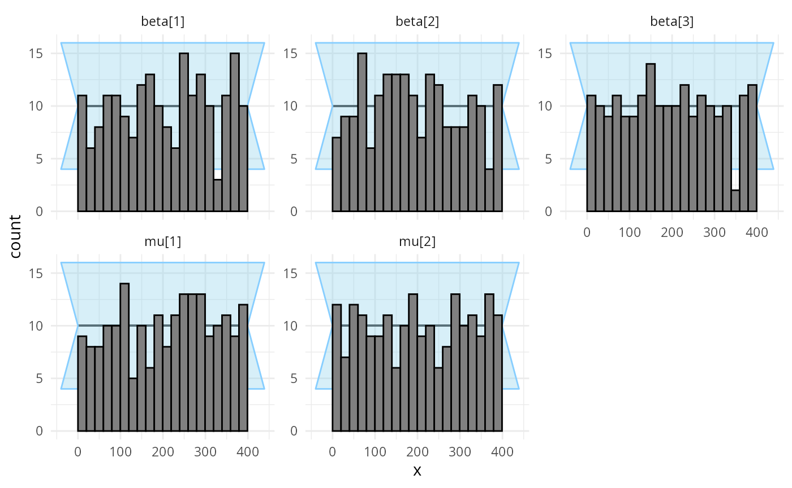
plot_ecdf_diff(results_combined)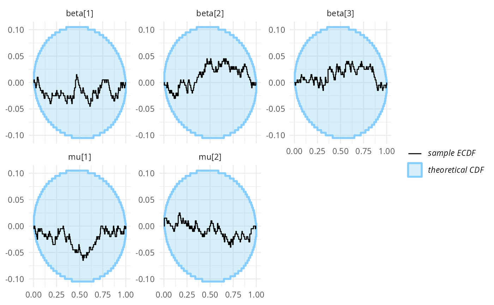
Indeed it seems the model works pretty well.
Adding rejection sampling
As done previously, we could just exclude the fits that had divergences, but just to complete our tour of possibilities, we’ll show one more option to dealing with this type of problem.
The general idea is that although we might not want to/be able to express our prior belief about the model (here that the two mixture components are distinct) by priors on model parameters, we still may be able to express our prior belief about the data itself.
And it turns out that if we remove simulations that don’t meet a
certain condition imposed on the observed data, the implied prior on
parameters becomes an additive constant and we can use exactly the same
model to fit only the non-rejected simulations. Note that this does not
hold if we rejected simulations based on some unobserved variables - for
more details see the rejection_sampling
vignette.
The main advantage is that if we can do this, we can avoid wasting computation on fitting data that would likely produce divergences anyway. The downside is that it means we no longer have a guarantee the model works for non-rejected data, so we need to check if the data we want to analyze would not be rejected by our criterion.
How to build such a criterion here? We’ll note that for Poisson-distributed variables the ratio of mean to variance (a.k.a the Fano factor) is always 1. So if the components are too similar, the data should resemble a Poisson distribution and have Fano factor of 1, while if the components are distinct the Fano factor will be larger.
Below is a plot of fano factors versus the number of divergences we’ve seen:
fanos <- vapply(dataset_combined$generated,
function(dataset) { var(dataset$y) / mean(dataset$y) },
FUN.VALUE = 0)
plot(fanos, results_combined$backend_diagnostics$n_divergent)All the divergence are for low fano factors - this is the histogram of Fano factor for diverging fits:
hist(fanos[results_combined$backend_diagnostics$n_divergent > 0])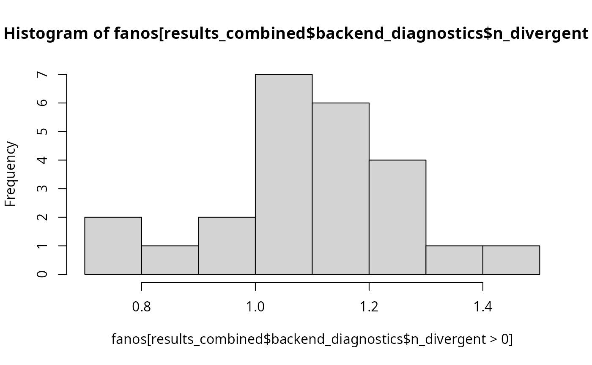
fano_threshold <- 1.6So what we’ll do is that we’ll reject any simulation where the observed data have Fano factor < 1.6. In practice a simple way to implement this is to wrap our generator code in a loop and break from the loop only when the generated data meet our criteria (i.e. is not rejected). This is our code:
generator_func_combined_reject <- function(N_obs, N_predictors) {
if(N_obs < 5) {
stop("Too low N_obs for this simulator")
}
repeat {
# If the priors for all components of an ordered vector are the same
# then just sorting the result of a generator is enough to create
# a valid draw from the ordered vector prior
mu <- sort(rnorm(2, 3, 1))
beta <- rnorm(N_predictors, 0, 1)
x <- matrix(rnorm(N_predictors * N_obs, 0, 1), nrow = N_predictors, ncol = N_obs)
x[1, ] <- 1 # Intercept
y <- array(NA_real_, N_obs)
for(n in 1:N_obs) {
linpred <- 0
for(p in 1:N_predictors) {
linpred <- linpred + x[p, n] * beta[p]
}
theta <- plogis(linpred)
if(runif(1) < theta) {
y[n] <- rpois(1, exp(mu[1]))
} else {
y[n] <- rpois(1, exp(mu[2]))
}
}
if(var(y) / mean(y) > fano_threshold) {
break;
}
}
list(
variables = list(
beta = beta,
mu = mu
),
generated = list(
N_obs = N_obs,
N_predictors = N_predictors,
y = y,
x = x
)
)
}
generator_combined_reject <-
SBC_generator_function(generator_func_combined_reject, N_obs = 50, N_predictors = 3)We’ll once again fit our model to 200 simulations:
set.seed(44685226)
dataset_combined_reject <- generate_datasets(generator_combined_reject, 200)
results_combined_reject <- compute_SBC(dataset_combined_reject, backend_combined,
keep_fits = FALSE, cache_mode = "results",
cache_location = file.path(cache_dir, "combined_reject"))## Results loaded from cache file 'combined_reject'## - 5 (2%) fits had some steps rejected. Maximum number of rejections was 2.## Not all diagnostics are OK.
## You can learn more by inspecting $default_diagnostics, $backend_diagnostics
## and/or investigating $outputs/$messages/$warnings for detailed output from the backend.No more divergences! And the ranks look nice.
plot_rank_hist(results_combined_reject)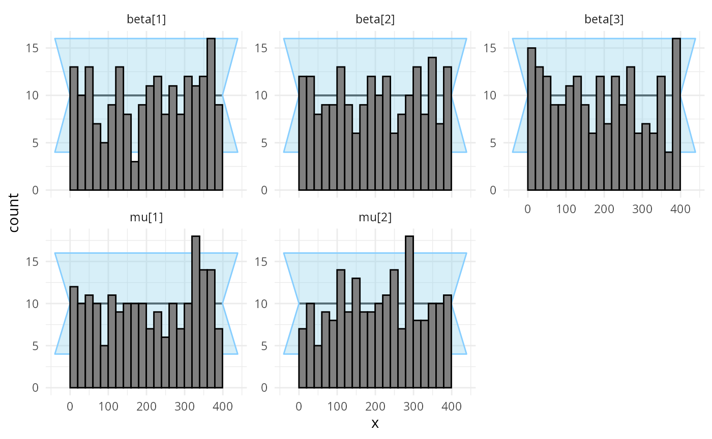
plot_ecdf_diff(results_combined_reject)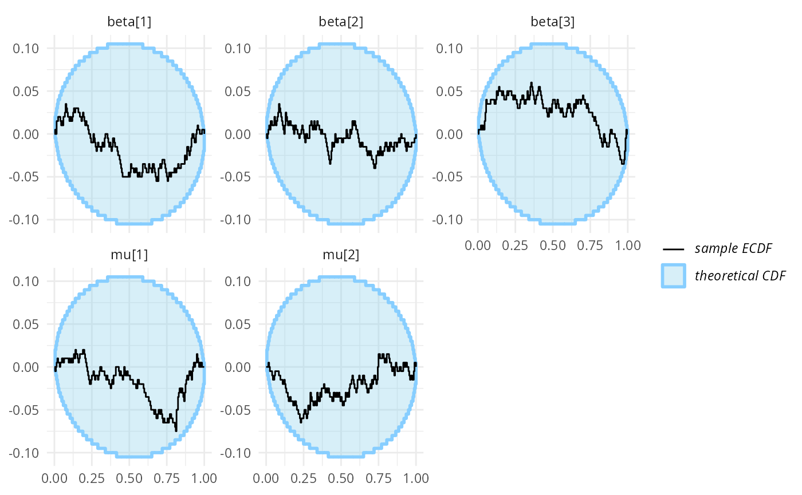
And our coverage is pretty tight:
plot_coverage(results_combined_reject)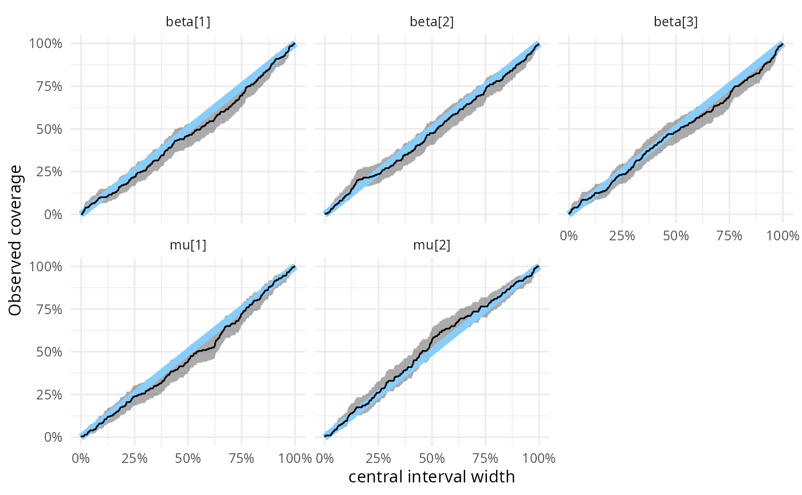
Below we show the uncertainty for two variables and some widths of central posterior intervals numerically:
stats_subset <- results_combined_reject$stats[
results_combined_reject$stats$variable %in% c("beta[1]", "mu[1]"),]
empirical_coverage(stats_subset, c(0.25,0.5,0.9,0.95))## # A tibble: 8 × 6
## variable width width_represented ci_low estimate ci_high
## <chr> <dbl> <dbl> <dbl> <dbl> <dbl>
## 1 beta[1] 0.25 0.25 0.159 0.21 0.272
## 2 beta[1] 0.5 0.5 0.392 0.46 0.529
## 3 beta[1] 0.9 0.9 0.828 0.88 0.918
## 4 beta[1] 0.95 0.95 0.904 0.945 0.969
## 5 mu[1] 0.25 0.25 0.168 0.22 0.283
## 6 mu[1] 0.5 0.5 0.397 0.465 0.534
## 7 mu[1] 0.9 0.9 0.845 0.895 0.930
## 8 mu[1] 0.95 0.95 0.898 0.94 0.965Maybe we think the remaining uncertainty is too big, so we’ll run 300 more simulations, just to be sure:
set.seed(1395367854)
dataset_combined_reject_more <- generate_datasets(generator_combined_reject, 300)
results_combined_reject_more <- bind_results(
results_combined_reject,
compute_SBC(dataset_combined_reject_more, backend_combined,
keep_fits = FALSE, cache_mode = "results",
cache_location = file.path(cache_dir, "combined_reject_more"))
)## Results loaded from cache file 'combined_reject_more'## - 3 (1%) fits had divergent transitions. Maximum number of divergences was 4.## - 4 (1%) fits had some steps rejected. Maximum number of rejections was 2.## Not all diagnostics are OK.
## You can learn more by inspecting $default_diagnostics, $backend_diagnostics
## and/or investigating $outputs/$messages/$warnings for detailed output from the backend.We get some very small number of problematic fits, which we can ignore in this volume (but probably more aggresive rejection sampling would remove those as well).
Our plots and coverage are now pretty decent:
plot_rank_hist(results_combined_reject_more)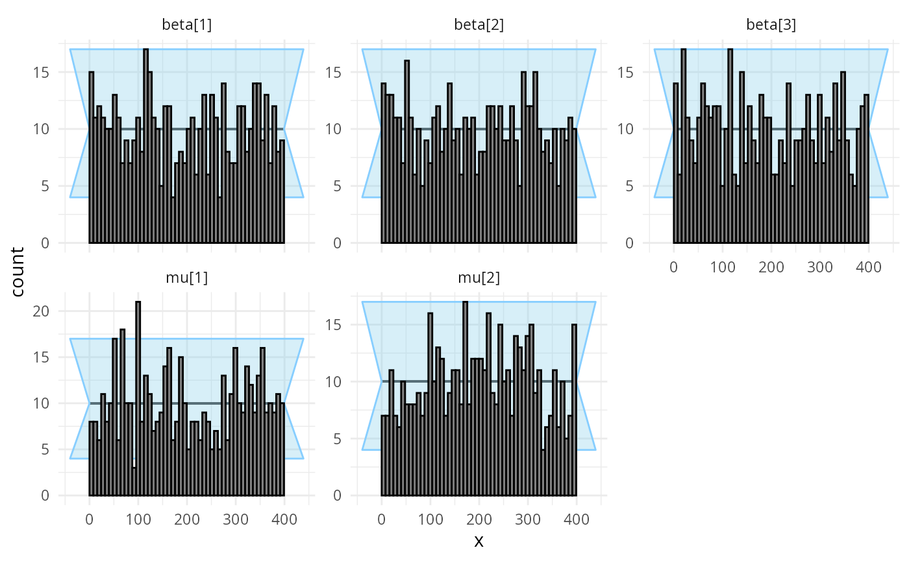
plot_ecdf_diff(results_combined_reject_more)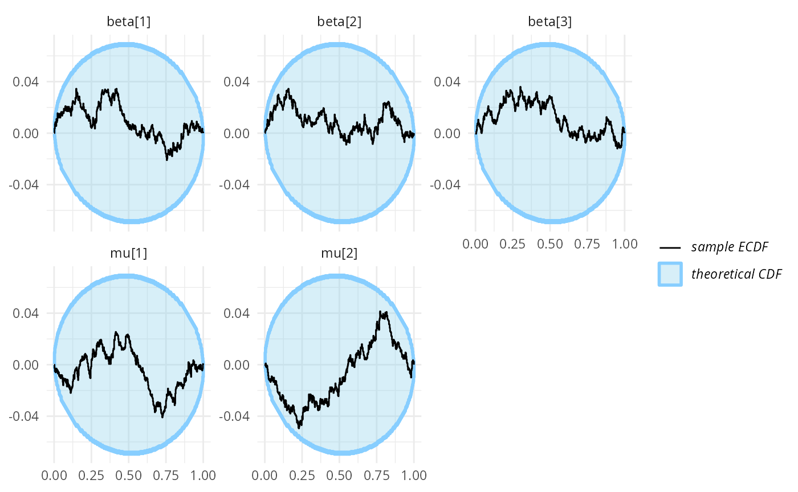
plot_coverage(results_combined_reject_more)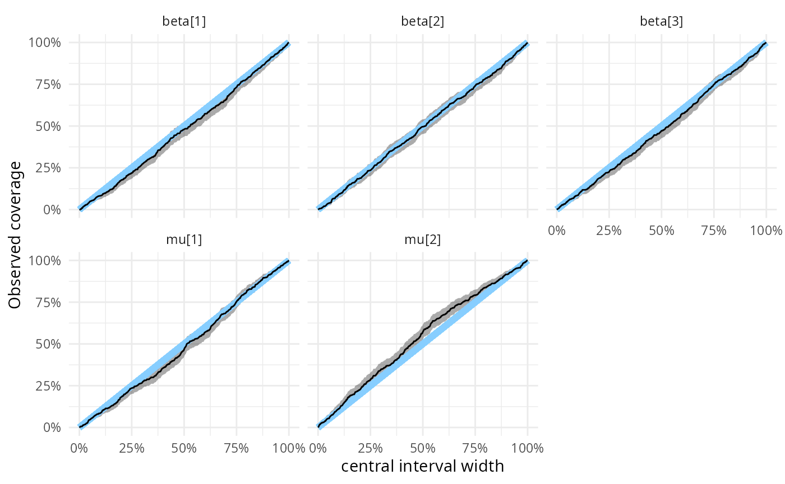
stats_subset <- results_combined_reject_more$stats[
results_combined_reject_more$stats$variable %in% c("beta[1]", "mu[2]"),]
empirical_coverage(stats_subset, c(0.25,0.5,0.9,0.95))## # A tibble: 8 × 6
## variable width width_represented ci_low estimate ci_high
## <chr> <dbl> <dbl> <dbl> <dbl> <dbl>
## 1 beta[1] 0.25 0.25 0.171 0.204 0.242
## 2 beta[1] 0.5 0.5 0.437 0.48 0.524
## 3 beta[1] 0.9 0.9 0.864 0.894 0.918
## 4 beta[1] 0.95 0.95 0.925 0.948 0.964
## 5 mu[2] 0.25 0.25 0.242 0.28 0.321
## 6 mu[2] 0.5 0.5 0.522 0.566 0.609
## 7 mu[2] 0.9 0.9 0.879 0.908 0.930
## 8 mu[2] 0.95 0.95 0.927 0.95 0.966This actually shows a limitation of the coverage results - for
mu[2] the approximate CI for coverage excludes exact
calibration for a bunch of intervals, but above we see that the more
trustworthy plot_ecdf_diff is not showing a problem
(although there is some tendency towards slight underdispersion).
Still, this might warrant further investigation if small
discrepancies in mu are considered important, if we are
interested only in the beta coefficients, we can stay
assured that their calibration is pretty good. We give you our word that
we ran additional simulations and the discrepancy disappears.
Finally, we can also use this simulation exercise to understand what would we be likely to learn from an experiment matching the simulations (50 observations, 3 predictors) and plot the true values (simulated by the generator) against estimated mean + 90% posterior credible interval:
plot_sim_estimated(results_combined_reject_more, alpha = 0.2)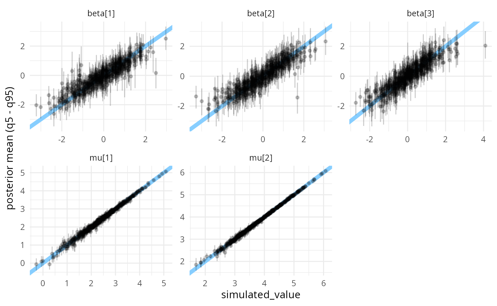
We see that we get very precise information about mu and
a decent picture about all beta elements, but the reamining
uncertainty is large. We could for example compute the probability that
the posterior 90% interval for beta[1] excludes zero,
i.e. that we learn something about the sign of beta[1]:
stats_beta1 <-
results_combined_reject_more$stats[
results_combined_reject_more$stats$variable == "beta[1]",]
mean(sign(stats_beta1$q5) == sign(stats_beta1$q95))## [1] 0.504Turns out the probability is only around 50%. Depending on your aims, this might be a reason to plan for a larger sample size!
Take home message
There are couple lessons I hope this exercise showed: First, building models you can trust is hard work and it is very easy to make mistakes. Despite the models presented here being relatively simple, diagnosing the problems in them was not straightforward and required non-trivial background knowledge. For this reason, moving in small steps during model development is crucial and can save you time as diagnosing the same problems in a 300-line Stan model with 50 parameters can be basically impossible.
We also hope we convinced you that the SBC package lets you get high-quality information from your simulation efforts and not only diagnose problems but also get some sort of assurance in the end that your model is at least pretty close to your simulator.
And that’s it for this vignette, thanks for staying until the end and hope the workflow ideas will be useful for you!